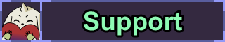

(games list)
Here you will find a list of games that I'm playing currently or want to play in the future. For what I want to play in the future, it is sorted into priorities, but those are only a rough idea, when I want to play something from the lower priorities, I will just do that :3
Furthermore you can find a table with games I already played
here, including links to the recordings on my youtube archive channel.

(support)
You already give me the greatest support by just watching and enjoying my stream :3
If you still wanna support me more than that, and even with money, then you can do that in following ways
- You can subscribe to me here on stream, and even get 5 emotes which you can use everywhere on Twitch then (with a tier 2/3 sub even 6/7 emotes)
- If you wanna give me a small tip, you can do that by clicking here
 (Starcrunsher)
(Starcrunsher)
 (Twitter)
(Twitter)
 (speedruns)
(speedruns)
 (stream schedule)
(stream schedule)